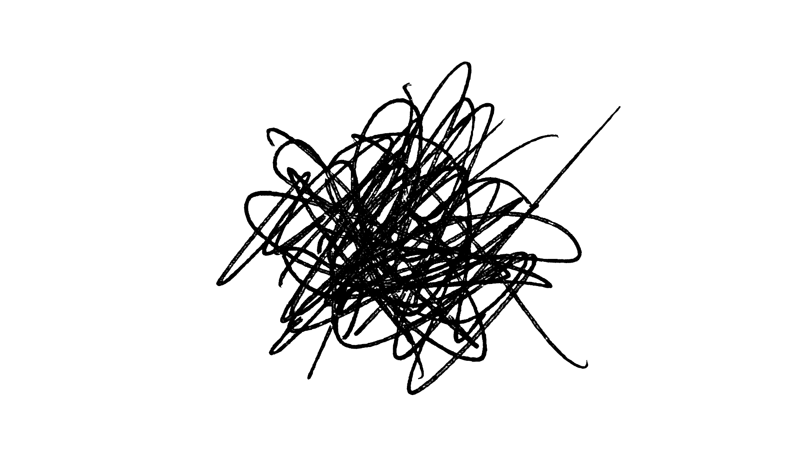

Про взрыв колеса
Сегодня я первый раз увидел как взрываются колёса у машины и покрышки разлетаются по дороге. И одно дело смотреть рилс про это в запрещённограме, и совсем другое когда ты за рулём на трассе и это случается с едущим по встречке грузовиком в 50 метрах от тебя.
И, скажу я вам, это пипец страшно.
Потому что сначала ты видишь как под машиной что-то бахает, разлетается пыль, и машина шатается от взрыва. Это всё как в замедленной съёмке.
А потом долетает звук, как нынче модно говорить, "хлопка", и от этого мозг как будто просыпается и начинает просчитывать варианты того что может случиться дальше. И от этих вариантов становится еще страшней.
Большая тяжело гружёная машина может либо поехать на тебя, либо опрокинуться поперёк трассы, либо из-под неё сейчас вылетит покрышка и тоже полетит в твою сторону.
Нифига приятного. И лучшее решение, которое приходит в голову - держаться от всей этой херни подальше. Поэтому тормоз в пол, чтобы сбросить скорость. Но полностью останавливаться тоже нельзя, чтобы машина немного двигалась и была возможность среагировать на то, что случится дальше.
А дальше из-под грузовика вылетает одна покрышка в скалу слева, разбрасывая камни и пыль, а вторая летит на мою полосу. К счастью, не в меня, а чуть впереди.
Случись взрыв на пару секунд позже, либо если бы я не сбросил скорость, то покрышка бы летела в меня. А я бы вероятно летел в кювет. Но по сути - просто повезло.
Вижу, что водитель грузовика смог справиться с управлением и нормально тормозит в своей полосе. Опасность миновала. Режим слоу-мо выключается, и я понимаю, что вспотел и сердце колотится. Наверное, руки тоже тряслись, но они изо всех сил впились в руль.
Грузовик остановился, видно что водила в шоке. За ним уже остановилась машина и её водитель выходит. Чуваку помогут.
Делаю несколько глубоких вдохов-выдохов, чтобы успокоиться, и потихоньку можно ехать дальше.
После такого понимаешь несколько важно держать и контролировать дистанцию и от передних, и от задних. Это позволило резко затормозить без риска получить удар сзади.
Обычно после подобных ситуаций я долго прихожу в себя и прокручиваю варианты того что могло произойти. Но видимо наличие цели ехать дальше и ежесекундно принимаемые за рулём решения отвлекли от навязчивых мыслей, и я быстро успокоился, просто на всякий случай ехал помедленнее.
Но посмотрим как я сегодня буду спать 🙂
Вот такая история. Берегите себя и не рискуйте на трассе без повода.